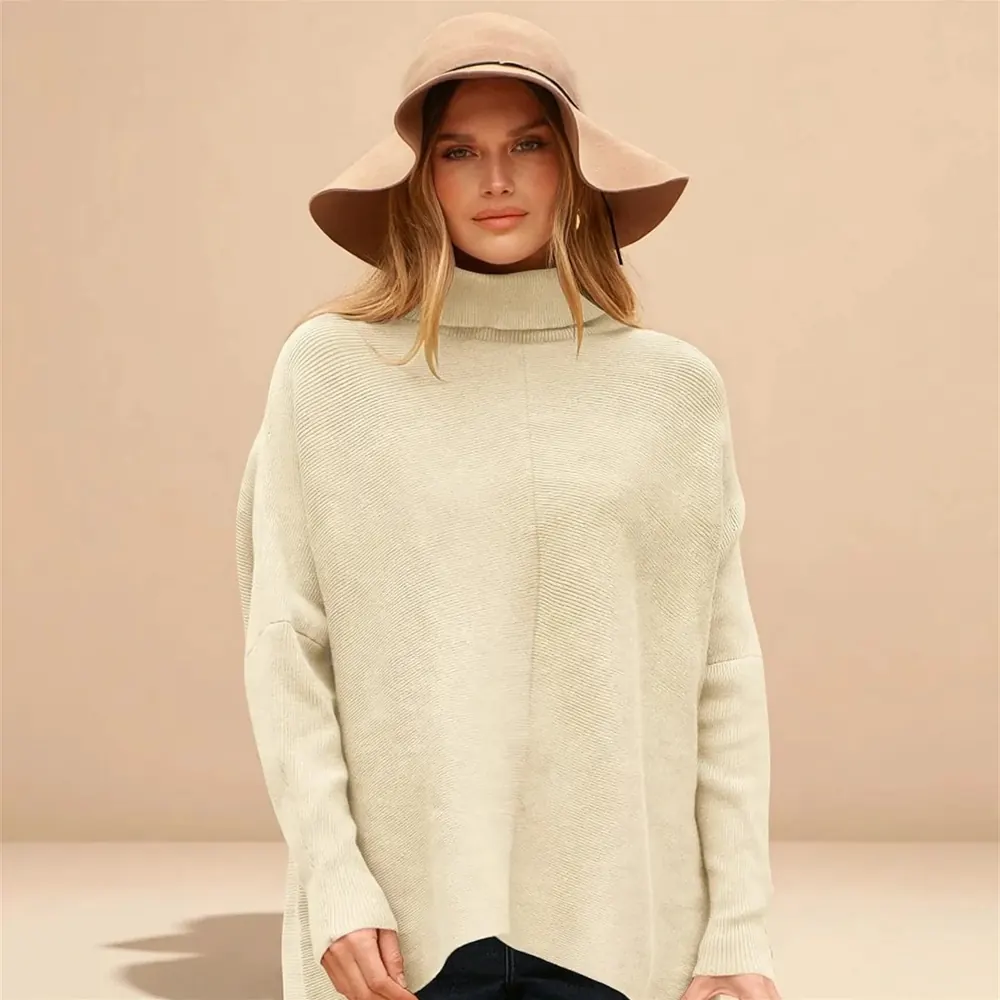
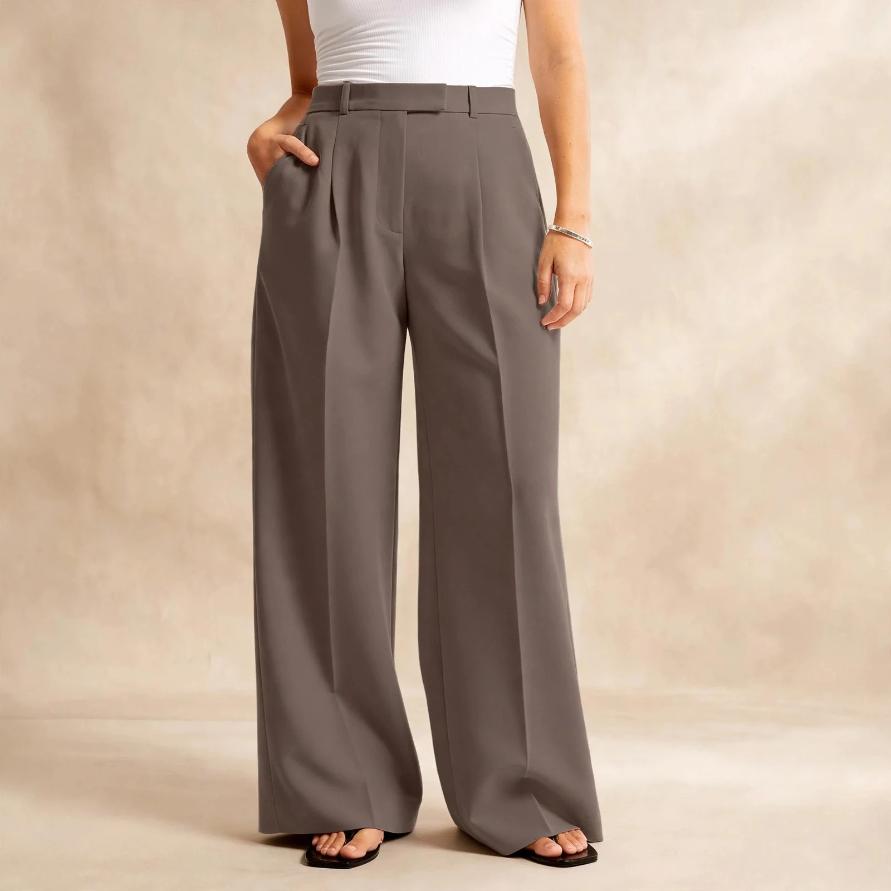
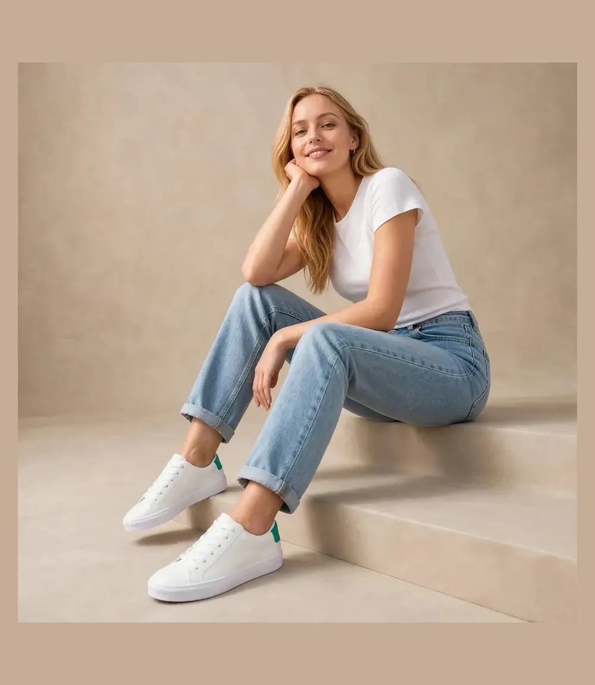

Building a chic, versatile capsule wardrobe does not require spending thousands at luxury department stores. By investing in foundational pieces curated around Pantone's classic neutral palettes•tailored pleats, structured outerwear, and clean footwear•you can rotate a handful of high-utility Amazon fashion pieces into dozens of elevated autumn outfits.
The $150 Capsule Formula
Total Investment: $140.96 (4 core items). We curated 4 tested Amazon essentials that combine into office-appropriate, weekend casual, and evening chic aesthetics while keeping the total under $150.
The 4 Core Amazon Essentials
1. Farktop Long Double-Breasted Trench Coat ($39.99)
A timeless trench coat is the ultimate styling shortcut. The Farktop Oversized Trench features storm flap lapels, tortoiseshell buttons, and a cinching waist belt that instantly elevates simple jeans or knitwear into an editorial New York street style moment.
2. ANRABESS Oversized Turtleneck Ribbed Knit Sweater ($39.99)
With its chunky fold-over turtleneck and batwing silhouette, this knit delivers the cozy, plush tactile feel of high-end cashmere blends at a fraction of the cost. The side-slit hem allows for an effortless French tuck.
3. NIMIN High-Waisted Wide-Leg Work Trouser Pants ($38.99)
Knife pleats and a relaxed drape give these trousers a luxurious, fluid drape that rivals designer tailoring. They feature an elastic back waistband for all-day comfort from morning desk sessions to evening dinners.
4. Adokoo Classic Minimalist White Leather Sneakers ($21.99)
Featuring clean lines with zero distracting branding, these cushioned leather sneakers bridge the gap between casual tailoring and off-duty chic.
How to Style 10+ Outfits With This Capsule
- The SoHo Commuter: NIMIN Pleated Trousers + ANRABESS Turtleneck tucked in + Adokoo White Sneakers + Farktop Trench Coat unbuttoned.
- Quiet Luxury Casual: ANRABESS Sweater + Straight Leg Denim + White Sneakers + Tortoiseshell Sunglasses.
- Bistro Evening: NIMIN Trousers + Fitted Bodysuit + Trench Coat belted tight + Ankle Boots.
Fall Capsule Wardrobe at a Glance: Costs and Ratings
The whole capsule on one screen: four pieces, $140.96 total, every one of them rated 4.6 stars or higher by thousands of buyers. Prices and ratings are from the LOOKIQ catalog, checked October 2026 — confirm the live price on each product page before you buy, because Amazon prices move.
| Piece | Role | Rating | Price |
|---|---|---|---|
| Farktop Long Double-Breasted Trench Coat | The outer layer | 4.8★ | $39.99 |
| ANRABESS Oversized Turtleneck Sweater | The knit | 4.8★ | $39.99 |
| NIMIN High-Waisted Wide-Leg Trousers | The tailored base | 4.6★ | $38.99 |
| Adokoo Classic Minimalist White Sneakers | The footwear | 4.6★ | $21.99 |
| Complete capsule | 4 pieces, 10+ outfits | $140.96 |
The Fall Capsule Wardrobe, Piece by Piece
A capsule only works if every piece can carry an outfit alone and combine with all the others. Here is why these four earned their slots — and the specific detail in each that does the heavy lifting.
1. Farktop Long Double-Breasted Trench Coat — The Outer Layer
The trench is the capsule's force multiplier: it is the piece that turns the other three into an outfit in photographs. The Farktop design is double-breasted with storm flap lapels and tortoiseshell buttons, cut in a relaxed tailored fit with a cinching waist tie belt, in a mid-weight windproof blend that handles autumn weather without winter-coat bulk. It is sized from XS to XXL and holds a 4.8-star rating from more than 3,400 buyers at $39.99 — against a $65.00 list price. How it works in the capsule: belted tight, it is a dress-like outer layer over the turtleneck; worn open, it frames the trousers and knit as a deliberate column. If you want to compare trench silhouettes before committing, our best oversized trench coats on Amazon guide reviews the wider field. See the full review and photos.
2. ANRABESS Oversized Turtleneck Sweater — The Knit

Every capsule needs one piece that feels like a reward, and this is it. The ANRABESS knit is an oversized, batwing-silhouette turtleneck in a cloud-soft hypoallergenic yarn, with a chunky fold-over neck and a side-split hem — that split is the functional detail, because it is what allows the effortless French tuck into the trousers without bunching at the waist. The drape is deliberately generous, flattering across body types, and it comes in more than 30 colors, although the capsule math works best if your first one stays inside the neutral palette. The buyer verdict is emphatic: 4.8 stars across more than 38,000 ratings, the most-reviewed piece in this capsule. How it works: tucked with trousers and sneakers for the office formula, untucked over denim on weekends, and as the warmth layer the trench was designed to frame. See the full review and photos.
3. NIMIN High-Waisted Wide-Leg Trousers — The Tailored Base

Trousers are the capsule's discipline: the piece that keeps knitwear and a trench reading as tailoring instead of comfort dressing. The NIMIN design is high-waisted with knife pleats and a fluid, relaxed drape in a wrinkle-resistant, breathable fabric — and the comfort engineering is in the back, where an elastic back waistband gives all-day give from morning desk sessions to evening dinners without changing the clean front line. Multiple inseam lengths, including petite and regular, mean the wide leg breaks where it should instead of pooling at the shoe. Rated 4.6 stars from nearly 9,000 buyers. How it works: it is the shared base of the commuter, office and evening formulas in the styling section above — one trouser, three registers. See the full review and photos.
4. Adokoo Classic Minimalist White Sneakers — The Footwear

The sneaker is the capsule's translator: it is what lets tailored trousers read modern instead of corporate. The Adokoo pair keeps the profile clean and logo-free, with a cloud-comfort orthotic footbed for full days on your feet and a stain-resistant, wipe-clean surface — a specification that matters enormously for a white shoe in October weather. It fits true to standard US women's sizes and holds a 4.6-star rating from more than 12,500 buyers, at $21.99 the cheapest piece in the capsule. How it works: with the trousers for the commuter look, with denim on weekends, and under the sweater-and-trouser column when the day runs long. See the full review and photos.
A 7-Day Rotation: One Week of Outfits From Four Pieces
Monday, the SoHo Commuter: trousers, turtleneck tucked, sneakers, trench unbuttoned — the formula from our styling list, and the week's most photographed silhouette. Tuesday, desk to dinner: same trousers and knit, trench belted tight for the evening so the coat becomes the outfit. Wednesday, denim reset: turtleneck untucked over your straight-leg denim, sneakers, trench carried over the arm if the day warms. Thursday, the quiet repeat: Monday's column again with the knit worn loose instead of tucked — nobody reads it as a repeat, because the trench changes the outline. Friday, bistro evening: trousers with a fitted bodysuit — the one deliberate add-on this capsule welcomes — trench belted, sneakers swapped for ankle boots if you own them. Saturday, market morning: denim, turtleneck, sneakers, trench as the weather layer. Sunday, the soft day: trousers and knit with the trench over pajamas-adjacent errands — the capsule's point is that even its laziest combination clears the bar.
Extending the Capsule Into Winter
A good capsule should bend with the season instead of being replaced by it. When temperatures drop, the trench stays as the visible outer layer on milder days while the knit rotation deepens: our oversized sweaters guide covers the catalog's strongest knits for a second and third sweater in the same palette. Footwear is the second lever — swapping the sneakers for a lug-sole boot from our chunky Chelsea boots guide winterizes every formula in the rotation without touching the other three pieces. And for sharp, wet-weather days, a layer from our faux leather jackets guide worn under the open trench adds edge and insulation in one move. Buy each extension inside the existing palette and the arithmetic still holds: a wardrobe that mixes completely, bought a few honest pieces at a time.
Care and Storage Tips for Knits and Coats
Capsule pieces work harder than regular clothes, so care is what protects the investment. Fold the turtleneck rather than hanging it — a chunky knit on a hanger stretches at the shoulders — and rest it a day between wears so the yarn recovers. The trench wants the opposite: hang it on a wide hanger, belt loosely tied, so the lapels keep their line; its mid-weight blend shrugs off a shake for most creases. The trousers' wrinkle-resistant finish rewards a smooth hang straight from the wash. And keep the white sneakers on the wipe-clean routine the fabric is designed for — thirty seconds after a wet day, not a rescue mission at the end of the month.
Fall Capsule Wardrobe FAQs
How much does the Amazon fall capsule wardrobe in this guide cost?
The total investment is $140.96 for 4 core items, keeping the total under $150.
What are the 4 core essentials in the fall capsule wardrobe?
The 4 core essentials are the Farktop Long Double-Breasted Trench Coat ($39.99), the ANRABESS Oversized Turtleneck Ribbed Knit Sweater ($39.99), the NIMIN High-Waisted Wide-Leg Work Trouser Pants ($38.99), and the Adokoo Classic Minimalist White Leather Sneakers ($21.99).
How many outfits can you create with this fall capsule wardrobe?
The 4 core essentials combine into 10+ coordinated outfits, including office-appropriate, weekend casual, and evening chic aesthetics.
What makes the NIMIN trousers comfortable for all-day wear?
They feature knife pleats and a relaxed drape, plus an elastic back waistband for all-day comfort from morning desk sessions to evening dinners.
What is the cost per outfit for a fall capsule wardrobe like this one?
The capsule costs $140.96 for four pieces that combine into 10+ coordinated outfits, which works out to roughly $14 per outfit — and the figure keeps falling with every additional combination you wear. Cost per wear, not sticker price, is the honest way to judge a capsule.
Does this capsule work for petite frames?
Yes, with two details in your favor: the NIMIN trousers come in multiple inseam lengths including petite and regular, so the wide leg breaks at the right point, and the Farktop trench is sized from XS to XXL with a waist tie belt that lets you set the proportion instead of accepting the factory line.
Shop The Complete Amazon Fall Capsule
Explore all 4 coordinated pieces in our interactive Lookbook with direct Amazon Prime delivery.